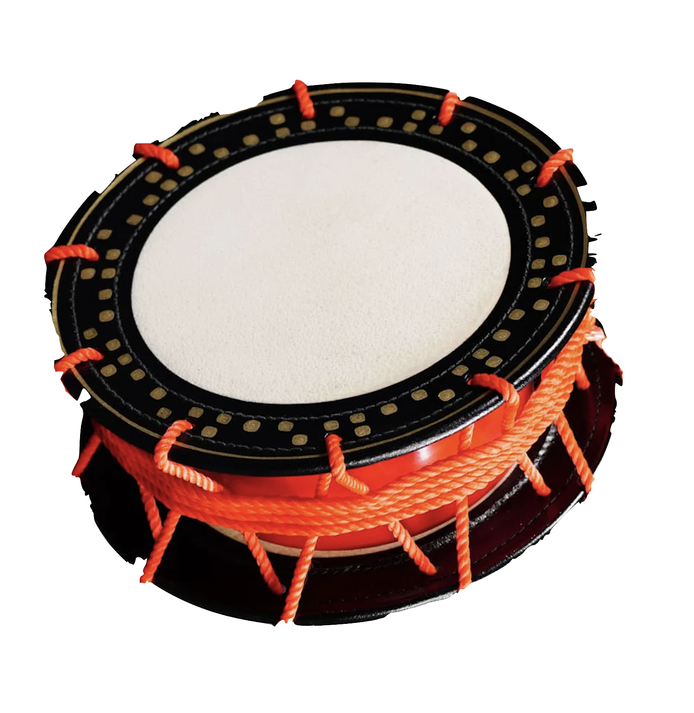
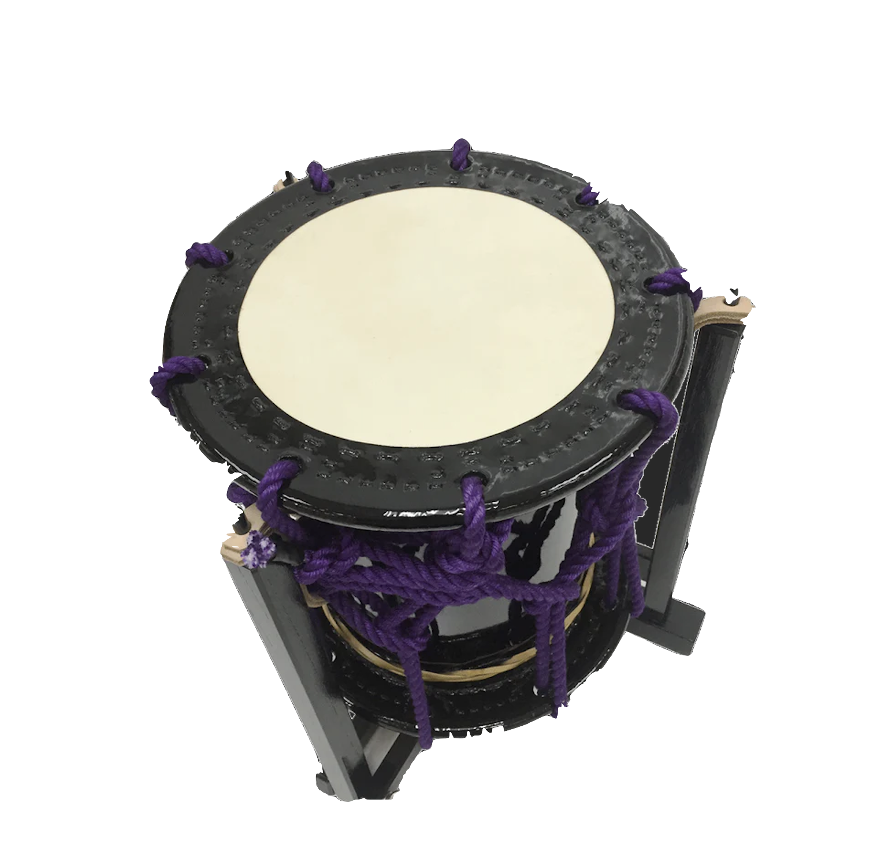
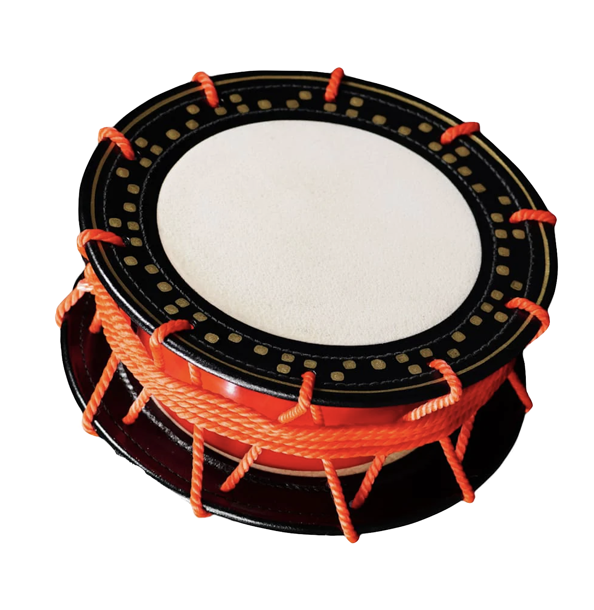

Virtual Taiko Set
Below is an ACES Ji Pod! Keys
'D' and 'F'
are for the
left shime
,
'F' and 'G'
are for the
okedo
, and
'H' and 'J'
are for the
right shime
. Can you play ACEs ji? (with no dynamics because I didn't know how to implement that)
  